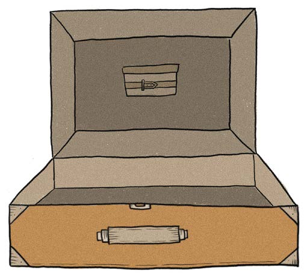

UNA VALIJA LLENA DE PREGUNTAS
¿Cuánto tiempo estoy frente a la pantalla?
¿Qué hago?
¿Qué información comparto y cuál no?
¿Puedo hablar con cualquier persona?
¿Puedo perderme en la nube como en un bosque?
¿Qué puedo crear?
¿Burlarse de alguien en las redes es igual que burlarse en el recreo?
¿Siempre tengo que apretar el botón que dice ACEPTAR?
¿Qué pasa con mis datos en Internet?
¿Quién los ve? ¿Qué hacen con ellos?
¿Qué información es verdadera y cuál es falsa?
¿Soy libre para elegir cuándo desconectarme?